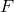

The  operator can be used for literal substitution of the content of a string variable into the command line. The name of the string variable follows the sign, and its content is expanded to the command line, as in this example
mac = "with lines lw 2 lt 1" plot sin(x) @mac
which is equivalent to
plot sin(x) with lines lw 2 lt 1
The macro, being a string, can contain any characters, but as with other variable names, the name of the macro can contain only alphanumeric characters and the underscore sign. This also means that any operator, with the exception of the and and or operators, can signify the end of the macro name, without the need for a trailing white space. Therefore, in the example
foo = "50" print @foo*3
the end result is 150; 50*3 is passed to the command line interpreter.
One application of macros may be to supply arbitrary algebraic expressions for later evaluation.
Using a macro to calculate the mean of a dataset.
In this example, we create a subroutine which calculates the mean value of an arbitrary function of the columns in a datafile. The subroutine takes two arguments: the name of the datafileand a string containing the function to be averaged. |
subroutine mean(filename, func) |
foreach datum x in filename using func |
This subroutine can be called from the command line as in the example |
print mean(’data.dat’, "sin($1)*exp($2)") |
where it returns the mean of the product of the sine of the first column, and the exponential of the second column. |